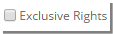
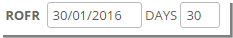

	<section>
		<article>
			<h2>Syndication - Rights<span></span></h2>
			<div>
				<p></p>
				<p>Click on Rights Tab. A new page appears with Add button. User can add rights. </p>

				<p>System allows to add multiple movies for multiple right or single movie for multiple platform or single movie for single platform or multiple movies for single platform.</p>

				<div class="triangle-border top">				
					
				</div>

				<p><strong>Title</strong></p>
				<p>To select title, click on <b>Select Title</b> drop down which shows list of added titles in Deal Movie list page in General Tab. It looks like below.</p>
				
				<div class="triangle-border top">				
					
				</div>

				<p>To select required title, select the respective title from drop down or search for title and then select them.</p>

				<p><strong>Domestic Theatrical:</strong></p>
				<p>To syndicate titles in Indian theatrical territories, check <strong>Domestic Theatrical</strong> option. This will populate Theatrical platform and respective domestic Circuits and Territories in Region drop down. </p>
				<div class="triangle-border top">				
					
				</div>
				<p><strong>Platform/Rights:</strong></p>

				<p>It displays list of platforms in tree structure in the screen. User need to select respective platform by clicking on its check box.</p> 

				<p><strong>Note:</strong> Platform/Rights will be populated based on rights acquired for the Title(s) selected.</p>
				<div class="triangle-border top">				
					
				</div>

				<p><strong>Sub Licensing:</strong></p>

				<p>Sub Licensing check box if selected indicates the rights which are sub licensed will be syndicated or won't allow to syndicate.</p>

				<div class="triangle-border top">				
					
				</div>

				<p><strong>Exclusive:</strong></p>
				<p>Select the Exclusive check box if title(s) is being syndicated as Exclusive. . If title is syndicated as Exclusive, that right combination cannot be used in other deal or Holdback cannot be applied to it.</p>

				<p><strong>Title Language:</strong></p>
				<p>To syndicate title with Title Language, select  check box or leave it unchecked if not required.</p>

				<p><strong>Region:</strong></p>

				<p>Region will be populated based on the selection of Platforms.</p>

				<p>To select Country to syndicate, click on 'Country' drop down which looks like below. </p>

				<p>To select Territory to syndicate, click on 'Territory' radio button and select desired Territory.</p>

				<div class="triangle-border top">				
					
				</div>

				<p><strong>VALIDITY:</strong></p>
				<p>Select Term as either Year Based or Perpetuity or Run Based by radio button.</p>

				<p>If user selects <p><strong>Year Based</strong> then user need to give Right Start Date and End Date which should be greater than start date.</p>

				<div class="triangle-border top">				
					
				</div>
				<p>To create <strong>Year based Tentative</strong> deal, select Tentative check box and chose Rights Start Date and Terms. This Rights period will not have any End Date.</p>

				<p>Selecting Term as <strong>'Perpetuity'</strong> indicates rights as unlimited which only requires to select rights start date.</p>

				<p>To select a date/day in which the rights/deal can be renewed, select <strong>ROFR</strong> check box. User can select ROFR trigger date or Days. Either of the fields are auto calculated based on each other.</p>
				<div class="triangle-border top">				
					
				</div>

				<p><strong>Note:</strong> ROFR is not applicable for Perpetuity based rights/rights period.</p>

				<p><strong>Limitations: </strong></p>
				1) If movie is acquired for unlimited rights (Perpetuity), then user can syndicate it to any period.<br>
				2) If movie is acquired for limited rights i.e. within some period then user can't syndicate its rights for unlimited (Perpetuity). User can only syndicate within the acquired rights period. </p>

				<p><strong>Language</strong> has two options - Subtitle and Dubbing</p>

				<p>User can select either a language/s or Language Group/s from the drop down list.</p>

				<div class="triangle-border top">				
					
				</div>

				<p>To syndicate Sub Titling on Language level select Language radio button and select required Language.</p>

				<p>To syndicate Sub Titling on Language Group level, select Language Group radio button and select required Language group. Also user can use search and then select respective groups. </p>

				<p><strong>Dubbing:</strong></p>

				<p>User can syndicate Dubbing Language or Language Group to syndicate rights on Dubbing Language basis. </p>

				<div class="triangle-border top">				
					
				</div>

				<p><strong>Note:</strong> Refer Sub Titling Language above and follow same steps for Dubbing Language.</p>

				<p><strong>Restriction Remarks:</strong></p>

				<p>Enter deal restriction remarks up to 4000 characters, if there are any restrictions to deal.</p>
				<div class="triangle-border top">				
					
				</div>

				<p><strong>Adding Hold Back for Movies:</strong></p>

				<p>User can add holdback for one or multiple movies. Click 'Add Holdback' Button.</p>

				<div class="triangle-border top">				
					
				</div>

				<p>Click on <strong>'Select Platforms' </strong>to give information about 'Holdback On'. It display list of selected platforms, select required platforms among these. </p>

				<p>Click on <strong>'Region'</strong> to give information about Regions having Holdback on them.</p>

				<p>Select <strong>Language</strong> such as Title Language, Sub Titling or Dubbing on which you want to provide holdback on.</p>

				<p><strong>Holdback Type</strong>, select either Release or Date. Holdback means when licensor puts certain restrictions on Licensee for certain platforms, region, language etc.</p>

				<p>If user selects "Holdback Type" as 'Release', user need to enter 3 sections of information in 'Holdback Date/Period'. 1st section is to enter No. and 2nd section is to select either Days / weeks / Months / Year and 3rd section is to select Release on which Platform, this list box will be displayed with only 'theatrical' platform.</p>

				<p><strong>Note:</strong> User will be allowed to holdback rights for release only on 'theatrical' platform. If user select "Holdback Type" as 'Date' then user need to enter only release date in 'Holdback Date/Period'. </p>

				<p>Enter <strong>Holdback Comment</strong> if any. <strong>Save</strong> button will Save the holdback and <strong>Cancel</strong> will cancel edit and not save data.</p>

				<p><strong>Modify or Delete the Holdback:</strong></p>

				<p>Click on <strong>Pencil Icon</strong> to modify the Data or Click on the <strong>Trash Icon</strong> to remove the Hold back.</p>

				<div class="triangle-border top">				
					
				</div>

				<p>It opens pop upin edit mode along with SAVE and CANCEL button. Make necessary changes and Click on Update button for save the modify Data.</p>

				<p><strong>Note:</strong> System won't allow to repeat the combination of Title, Platforms, Period, and Country/Territory.</p>

				<p>After filling all the information in rights tab, it looks like below.</p>

				<div class="triangle-border top">				
					
				</div>

				<p>To save rights, click on '<b>Save Rights</b>' button. To cancel saving, click on '<b>Cancel</b>' button.</p>

				<p>After saving rights, <b>Sub Licensing</b> pop up appears. These are Acquisition Sub Licensing and Restriction Remarks.</p>

				<div class="triangle-border top">				
					
				</div>

				<p>User will click on <b>OK</b> button to close the Sub Licensing pop up and system will redirect to Rights List page.</p>

				<p><strong>Rights List Page:</strong></p>

				<p>After saving rights, following page will appear called as Rights List Page.</p>

				<div class="triangle-border top">				
					
				</div>


				<p><strong>Page View:</strong></p>

				<p><b>Group</b> - By default, syndication rights list page would be viewed in Group. It shows rights in groups.</p>

				<p><b>Summary</b> - This option bifurcates rights title wise.</p>

				<div class="triangle-border top">				
					
				</div>
				<p><b>Detail</b> - This option shows rights in detail level. 1 platform against 1 title.</p>

				<div class="triangle-border top">				
					
				</div>

				<p>- Show All button resets search and shows rights in Group view.</p>

				<div class="triangle-border top">				
					
				</div>

				<p>Enter Rights remarks up to 4000 characters, if required.</p>

				<p><strong>Validating Rights:</strong></p>

				<p>After rights are saved, they are validated against Acquisition. When there is any error it will show 'Show Error' icon. </p>


				<p>If there are not validation errors during validation process, Rights will get saved successfully.</p>

				<p>Clicking on 'Show Error' button will open a pop up displaying error occurred during Rights validation as below:</p>

				<p><b>Title not Acquired</b> - When title is not acquired for particular rights combination.</p>

				<p><b>Platform not Acquired</b> - When title is not acquired for particular rights combination.</p>

				<p><b>Rights Period mismatch</b> - When title is not acquired for particular rights combination.</p>

				<p><b>Region not Acquired</b> - When title is not acquired for particular rights combination.</p>

				<p><b>Title Language not Acquired</b> - When title is not acquired for particular rights combination.</p>

				<p><b>Subtitling Language not Acquired</b> - When title is not acquired for particular rights combination.</p>

				<p><b>Dubbing Language not Acquired</b> - When title is not acquired for particular rights combination.</p>

				<p><b>Combination conflict with other Rights</b> - When a particular rights combination is duplicated within a deal.</p>

				<p><b>Combination already Syndicated</b> - When rights combination is syndicated as Exclusive in 1 deal and user is trying to syndicate the same combination in same or other deal.</p>

				<div class="triangle-border top">				
					
				</div>

				<p>In 'Show Error' pop up, there are following options:</p>

				<p>- Search with single or multiple titles in the grid.</p>

				<p>- Page Size will apply desired page size to view the records and paging will be shown based on page size.</p>

				<p>- Reprocess button will reprocess the right for validation. If rights conflict are resolved, then 'Show Error' will not come.</p>

				<p>- Close button will close the Error dialogue pop up.</p>

				<p><strong>Modify or Delete Rights:</strong></p>

				<div class="triangle-border top">				
					
				</div>

				<p>User can edit the rights by clicking <b>Pencil Icon</b> for a particular record. </p>

				<p>On clicking 'Edit', user can modify the right and update the changes. If the particular combination is syndicated than user won't be able to change the combination of right. User can only add more information to the right.</p>

				<p>Similarly, User can delete the right by clicking <b>Trash Icon</b>. User will be prompted to confirm deletion of rights. </p>

				<p><strong>Note:</strong> If user clicks on Cancel button on rights list page, rights will be saved as it is but Rights Remarks will not be saved.</p>


			</div>
		</article>
	</section>